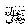

The mercy of Allahand His Malaaikah are upon those who eat Sehri
Ibn Umar Radiallahu anho says that, Rasulullahsaid: “Verily Allah 
Note: How great is Allah’sfavour upon us that even eating before dawn for fasting is so greatly rewarded. There are many Ahaadeeth in which the rewards of sehri are explained.
Many people lose this great reward because of their own laziness. Some people, after finishing the Taraweeh Salaat, eat some food in place of sehri and go to bed. What great blessing do they lose! Sehri actually means food eaten shortly before dawn.
Then it must also be remembered that to eat at the last permissible time is better and greater in reward than eating earlier, on condition that sehri is completed before the time of dawn.